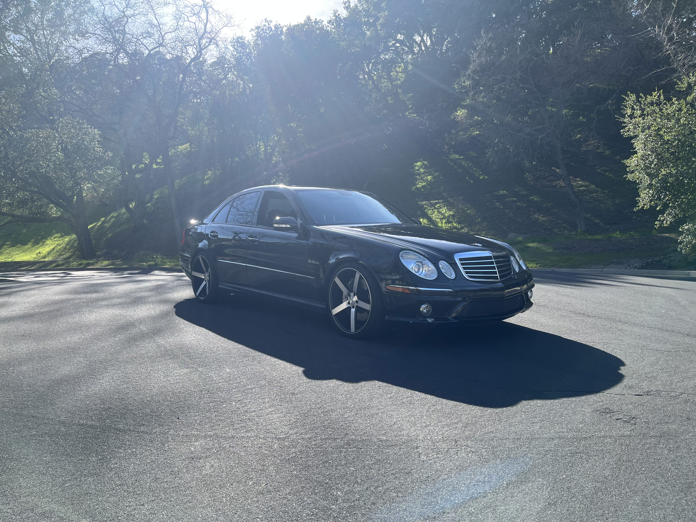

Lab 6 - Arrays and Objects
Challenge
Working with your partner, experiment with JavaScript arrays and objects.
Problems
I had an issue where I wasn't able to write multiple lines of JS in the google chrome console. But I later realized it was a snytax error and I was using "=" instead of ":" to declare variables inside of an object. Other than that everything else was smooth sailing.
Reflection
Being familiar with Python, Arrays and Objects really only needed me to be familiar with the JS syntax. After thursday's lecture everything was pretty clear.
Results
Below is the JS output for the array and object challenges of Lab 6.